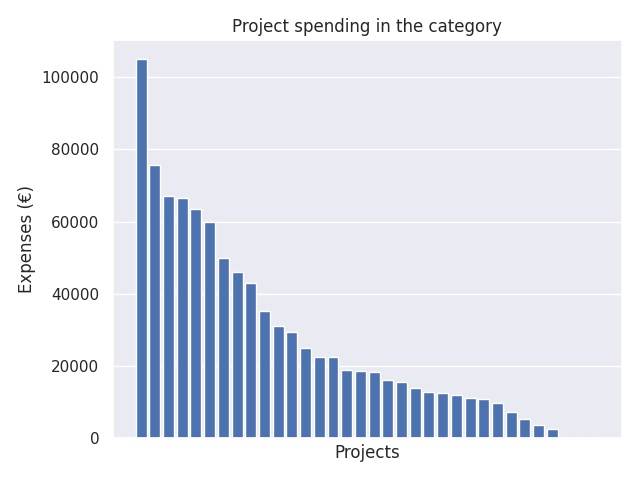

Valtionavustukset kielikylpytoiminnan laajentamiseen
Category summary
27.4K spent on average
105K highest spending

Reports in the category
Jyväskylän kaupunki - Kasvun ja oppimisen palvelut
Project name: Kielirikasteinen esiopetus ja perusopetus Jyväskylässä
105K spent
Lahden kaupunki, perusopetuspalvelut
Project name: Kielikylpyopetuksen ja muun laajamittaisen kaksikielisen esi- ja perusopetuksen vahvistaminen, laajentaminen ja kehittäminen Lahdessa.
75.6K spent
Tampereen kaupunki
Project name: Kieliä kehiin! - Kielikasvatusta tasapuolisesti ja laaja-alaisesti. Tampereen kaupungin kielirikasteisen ja laajamittaisen kaksikielisen opetuksen kehittämishanke
67.1K spent
Vaasan kaupungin perusopetus
Project name: Kielikylpyopetuksen laajentaminen ja kehittäminen
66.6K spent
Helsingin kaupunki, kasvatuksen ja koulutuksen toimiala
Project name: Helsingin opinpolut kaksikielisessä opetuksessa
63.5K spent
Turun kaupunki, sivistystoimi
Project name: Turun Kielivirta II
60K spent
Kittilän kunta
Project name: Mu golle giella ja kultuvra (Kultainen kieleni ja kulttuurini)
50K spent
Kokkolan kaupunki
Project name: Kielikasvatusta Kokkolassa
46K spent
Kuopion kaupunki
Project name: KieKu - Kieliä Kuopiossa 3
42.9K spent
Rovaniemen kaupunki
Project name: Saamen kielten kielikylvyn kehittäminen Rovaniemen kaupungin varhaiskasvatuksessa ja perusopetuksessa
35.3K spent
Keravan kasvatus- ja opetustoimi
Project name: Uusi kieli - uusi maailma
31.3K spent
Garantiföreningen för svenska lekskolan i norra Kymmenedalen r.f.
Project name: LEKIS -kielikylpykerho
29.5K spent
Iin kunta
Project name: Kielikylpytoiminnan aloittaminen Iissä
25K spent
Kielikylpypäiväkoti Sälenin vanhempainyhdistys ry
Project name: Kielikylpypaikkojen lisääminen Lauttasaaressa
22.6K spent
Kemin kaupunki
Project name: Virike jalkautuu
22.5K spent
Naantalin kaupunki
Project name: Kielikylpytoiminnan laajentaminen
18.9K spent
LINNALAN SETLEMENTTI RY
Project name: Play, Explore, Create and Learn
18.8K spent
Porin kaupunki
Project name: Porin kaksikielisen opetuksen laajentaminen
18.5K spent
Enontekiön kunta
Project name: Valtionavustukset kielikylpytoiminnan laajentamiseen
16.3K spent
Porvoon Kaupunki
Project name: Kielikylpyopetuksen kehittäminen uuden Vasun ja OPS:in hengessä
15.7K spent
Raahen kaupunki, opetustoimi
Project name: Valtionavustukset kielikylpytoiminnan laajentamiseen
13.9K spent
Suomalainen koulutusyhdistys ry
Project name: Kielet käyttöön Moskovassa
12.8K spent
Paraisten kaupunki
Project name: Kaksikielisyys osana koulujen yhteistyötä
12.5K spent
Sipoon kunta / Leppätienkoulu
Project name: Yhtenäisen kielikylpypolun jatkokehittäminen
12K spent
Kauniaisten suomenkielinen opetustoimi
Project name: Kielikylpyopetuksen jatkokehittäminen perusopetuksessa, erityisesti vuosiluokilla 7-9
11.2K spent
Sipon kunta/Sipoonjoen koulu vl 7-9
Project name: Molemmat kielet, yksin, yhdessä ja yhteistyössä.
11K spent
Kouluyhdistys Pestalozzi Schulverein Skolföreningen ry
Project name: Helsingin Saksalaisen koulun laajamittaisen kaksikielisen opetuksen kehittäminen
9.72K spent
Kalajoen kaupunki
Project name: Englantirikastus päiväkoteihin Kalajoella
7.32K spent
Tarton suomalaisen koulun yhdistys ry
Project name: Kielten opiskelun tehostaminen
5.5K spent
Laukaan kunta/ Kirkonkylän päiväkoti
Project name: Laukaan Kirkonkylän ja Jokiniemen päiväkotien kielisuihkutus
3.59K spent
Utsjoen kunta
Project name: Pohjoissaamen kielikylpyopetus Utsjoen kunnassa
2.51K spent
Kotkan kaupunki
Project name: Kaksikielisen perusopetuksen käynnistäminen Kotkassa
0 spent
Alajärven kaupungin sivistyspalvelut
Project name: Kaksikielinen Järvi-Pohjanmaa
0 spent
Turun normaalikoulu
Project name: CLIL liitoon! 2
0 spent